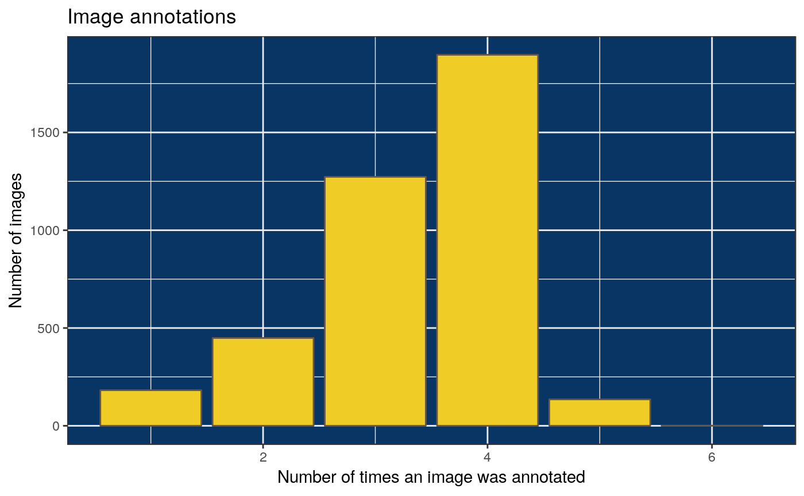
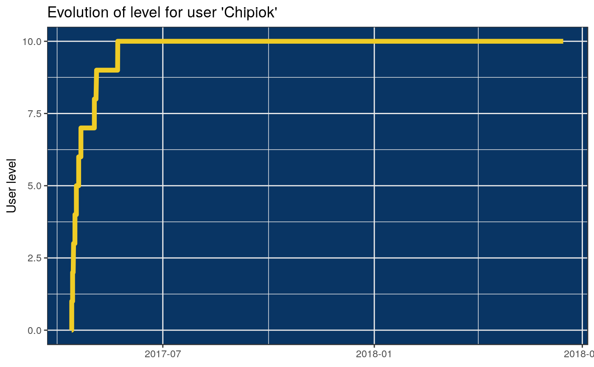

aa-general-exploration.Rmdlibrary(dplyr)
library(lubridate)
library(tidyr)
library(ggplot2)
# devtools::install_github("r-spatial/sf")
library(sf)
library(raster)
library(fasterize)
library(igraph)
library(rasterVis)
library(cowplot)
library(deeptools)
# devtools::document()
# devtools::document()
# devtools::load_all(here::here(""))# load data
export_file <- system.file("data_orig/export_last.csv", package = "deeptools")
liste_photo <- system.file("data_orig/liste_photo.txt", package = "deeptools")mission2 <- readr::read_csv(export_file) %>%
dplyr::select(-comment) %>%
tidyr::extract(name,
into = "datetime", regex = "_([[:digit:]]+).",
remove = FALSE
) %>%
mutate(datetime = ymd_hms(datetime, tz = "UTC")) %>%
# clean names of species
mutate(name_fr_clean = thinkr::clean_vec(name_fr, unique = FALSE)) %>%
group_by(username) %>%
mutate(
user_id = paste(username, as.character(as.numeric(as.factor(datDeb))), sep = "-")
) %>%
ungroup()## Parsed with column specification:
## cols(
## id = col_integer(),
## image_id = col_integer(),
## name = col_character(),
## username = col_character(),
## userlevel = col_integer(),
## comment = col_character(),
## datDeb = col_datetime(format = ""),
## datFin = col_datetime(format = ""),
## obs_code = col_character(),
## name_fr = col_character(),
## pos1x = col_integer(),
## pos1y = col_integer(),
## pos2x = col_integer(),
## pos2y = col_integer(),
## length = col_integer(),
## middle_x = col_integer(),
## middle_y = col_integer(),
## polygon_values = col_character()
## )## Warning in rbind(names(probs), probs_f): number of columns of result is not
## a multiple of vector length (arg 1)## Warning: 305088 parsing failures.
## row # A tibble: 5 x 5 col row col expected actual file expected <int> <chr> <chr> <chr> <chr> actual 1 100288 pos2x an integ… NULL '/usr/local/lib/R/site-library/deeptools… file 2 100288 pos2y an integ… NULL '/usr/local/lib/R/site-library/deeptools… row 3 100288 length an integ… NULL '/usr/local/lib/R/site-library/deeptools… col 4 100288 middle… an integ… NULL '/usr/local/lib/R/site-library/deeptools… expected 5 100288 middle… an integ… NULL '/usr/local/lib/R/site-library/deeptools…
## ... ................. ... ........................................................................... ........ ........................................................................... ...... ........................................................................... .... ........................................................................... ... ........................................................................... ... ........................................................................... ........ ...........................................................................
## See problems(...) for more details.part <- mission2 %>%
count(username) %>%
mutate(perc = n * 100 / sum(n)) %>%
rlang::set_names(c("UserID", "nb_annotations", "percentage")) %>%
arrange(desc(nb_annotations)) %>%
mutate(sumcum = cumsum(percentage))
# 463 participants
part## # A tibble: 463 x 4
## UserID nb_annotations percentage sumcum
## <chr> <int> <dbl> <dbl>
## 1 chipiok 81521 51.4 51.4
## 2 grillus33 10952 6.90 58.3
## 3 Pierre 5250 3.31 61.6
## 4 classe 3769 2.38 64.0
## 5 fetescience 3334 2.10 66.1
## 6 tiffk67 3231 2.04 68.1
## 7 Audrette 2484 1.57 69.7
## 8 Kazu 2211 1.39 71.1
## 9 macrobrachium 2098 1.32 72.4
## 10 Steatoda 1699 1.07 73.4
## # … with 453 more rowsnb_annot_part <- part %>%
group_by(nb_annotations) %>%
summarize(Nb_participants = n()) %>%
arrange(desc(nb_annotations)) %>%
mutate(sumcum = cumsum(Nb_participants))
nb_annot_part## # A tibble: 170 x 3
## nb_annotations Nb_participants sumcum
## <int> <int> <int>
## 1 81521 1 1
## 2 10952 1 2
## 3 5250 1 3
## 4 3769 1 4
## 5 3334 1 5
## 6 3231 1 6
## 7 2484 1 7
## 8 2211 1 8
## 9 2098 1 9
## 10 1699 1 10
## # … with 160 more rows# Without Chipiok (58552 annotations)
part2 <- part[-1, 1:3]
part2$sumcum <- cumsum(part2$percentage)## Number of images annotated by participant##
nb_image_part <- mission2 %>%
dplyr::select(image_id, username) %>%
distinct() %>%
count(username) %>%
arrange(desc(n))
nb_image_part## # A tibble: 463 x 2
## username n
## <chr> <int>
## 1 chipiok 2338
## 2 grillus33 1019
## 3 Audrette 570
## 4 classe 499
## 5 tiffk67 496
## 6 fetescience 409
## 7 Kazu 343
## 8 Steatoda 335
## 9 Pierre 306
## 10 Azaldar 273
## # … with 453 more rows## Number of time an image was annotated ----
nb_part_image <- mission2 %>%
dplyr::select(image_id, username) %>%
distinct() %>%
dplyr::count(image_id) %>%
arrange(desc(n))
freq_dis <- nb_part_image %>%
count(n) %>%
rename(n_annotation = n,
n_images = nn)
freq_dis## # A tibble: 6 x 2
## n_annotation n_images
## <int> <int>
## 1 1 182
## 2 2 449
## 3 3 1273
## 4 4 1897
## 5 5 135
## 6 6 1# histogram
ggplot(nb_part_image, aes(n)) +
geom_bar(fill = yellow, colour = grey) +
theme_bw() +
xlab("Number of times an image was annotated") +
ylab("Number of images") +
ggtitle("Image annotations") +
theme(panel.background = element_rect(fill = blue))
# Top animal
mission2_ONC %>%
group_by(name_fr_clean) %>%
summarise(n_images = length(unique(image_id))) %>%
arrange(desc(n_images))## # A tibble: 8 x 2
## name_fr_clean n_images
## <chr> <int>
## 1 escargot_buccinide 3251
## 2 vers_polynoides 2099
## 3 crabe_araignee 2032
## 4 pycnogonide 2028
## 5 couverture_vers_tubicole 1385
## 6 poisson_zoarcide 1361
## 7 ver_polynoide 636
## 8 couverture_microbienne 68# Top user
mission2_ONC %>%
group_by(username) %>%
summarise(n_images = length(unique(image_id))) %>%
arrange(desc(n_images))## # A tibble: 458 x 2
## username n_images
## <chr> <int>
## 1 chipiok 2106
## 2 grillus33 844
## 3 Audrette 516
## 4 classe 467
## 5 tiffk67 429
## 6 fetescience 370
## 7 Kazu 303
## 8 Steatoda 303
## 9 Pierre 259
## 10 Azaldar 238
## # … with 448 more rows# Top image
mission2_ONC %>%
group_by(image_id) %>%
summarise(n_users = length(unique(username))) %>%
arrange(desc(n_users))## # A tibble: 3,392 x 2
## image_id n_users
## <int> <int>
## 1 12755 6
## 2 10700 5
## 3 10705 5
## 4 10707 5
## 5 10758 5
## 6 10759 5
## 7 10829 5
## 8 10843 5
## 9 10883 5
## 10 10911 5
## # … with 3,382 more rowsUserlevel: username == "chipiok"
mission2_ONC %>%
filter(username == "chipiok") %>%
group_by(datDeb) %>%
summarize(userlevel = mean(userlevel)) %>%
ggplot() +
geom_line(aes(datDeb, userlevel), colour = yellow, size = 2) +
theme_bw() +
theme(panel.background = element_rect(fill = blue)) +
ggtitle("Evolution of level for user 'Chipiok'") +
ylab("User level") + xlab(NULL)